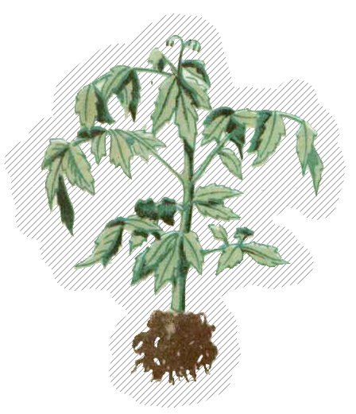
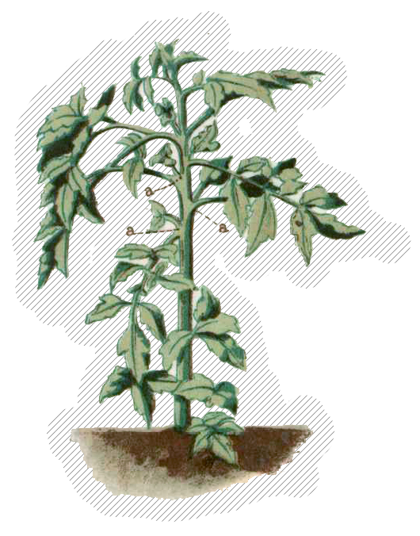

Покупайте здоровую рассаду,
вполне готовую для высадки в грунт.
Признаки хорошей рассады:
 — Возраст рассады — от 45 до 60 дней
— Возраст рассады — от 45 до 60 дней
— Имеет 7−8 листьев
— Высота стебля достигает 30—40 см,
а его толщина у основания корневой шейки 4—6 мм
— На первой цветочной кисти имеются нераспустившиеся бутончики
— Мочковатая корневая система достаточно развита
— Стебель и листья имеют интенсивную зелёную окраску
— Рассада не имеет повреждений и заболеваний
— На корнях имеется комок земли или горшочек.

Когда образующиеся на кустике побеги (пасынки) достигнут 3—5 см,
удаляйте их вручную выламыванием.
Первое пасынкование делают через 10—15 дней после высадки рассады,
примерно 15—20 июня. Повторяйте эту операцию несколько раз.
